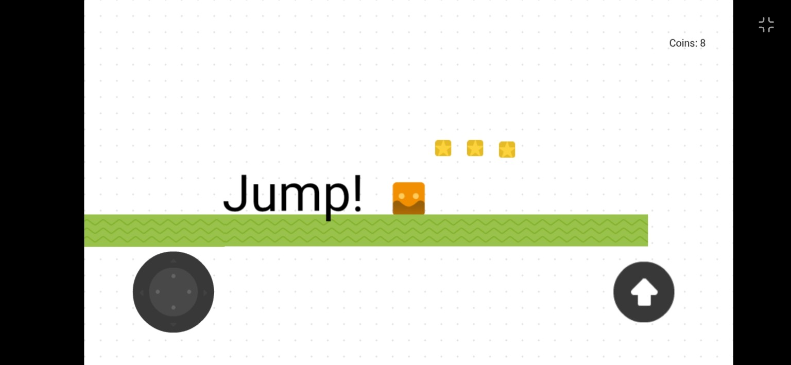
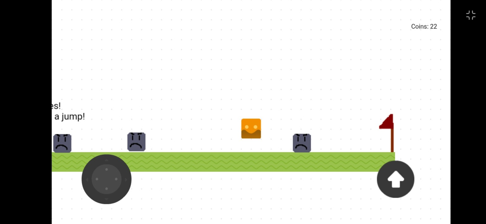

Easy Mobile Controls
Move left and right with the on-screen joystick, then use the large jump button to hop across platforms.
A mobile 2D platformer built in GDevelop
Jump, double jump, collect coins, avoid hazards, and guide a brave little cube to the flag in a beginner-friendly arcade adventure.
Game Overview
Cube World 2D is a casual mobile platformer designed for newer players and anyone who enjoys accessible, classic side-scrolling action. Players control a movable cube through levels, using timing and navigation to cross gaps, avoid enemies, collect coins, and reach the flag at the end.
The current build focuses on movement, jumping, double jumping, coins, enemies, and a one-hit restart challenge. The long-term vision adds more abilities and hazards while keeping the difficulty fair and welcoming.
Game Features
Move left and right with the on-screen joystick, then use the large jump button to hop across platforms.
Use double jumps to clear gaps, dodge enemies, and reach coins placed in trickier areas.
Coins reward exploration and are planned to help trigger brief invincibility against enemies.
Enemies patrol the level and force players to think about timing, spacing, and safe routes.
Future levels may introduce dashing, wall jumping, and rolling as new ways to move through obstacles.
Simple sound effects and bit-style music support the retro platformer feel.
Platform Information
Cube World 2D is playable through GDevelop. Open the game link on your device or browser and start jumping through the current build.
Screenshots


About the Developer
I'm a computer science major developing Cube World 2D as a hands-on way to learn game design, level design, and the full process of building a playable mobile game.
The goal is to create a platformer that stays approachable for beginners while gradually adding new abilities, enemies, hazards, checkpoints, hearts, and more rewarding exploration.